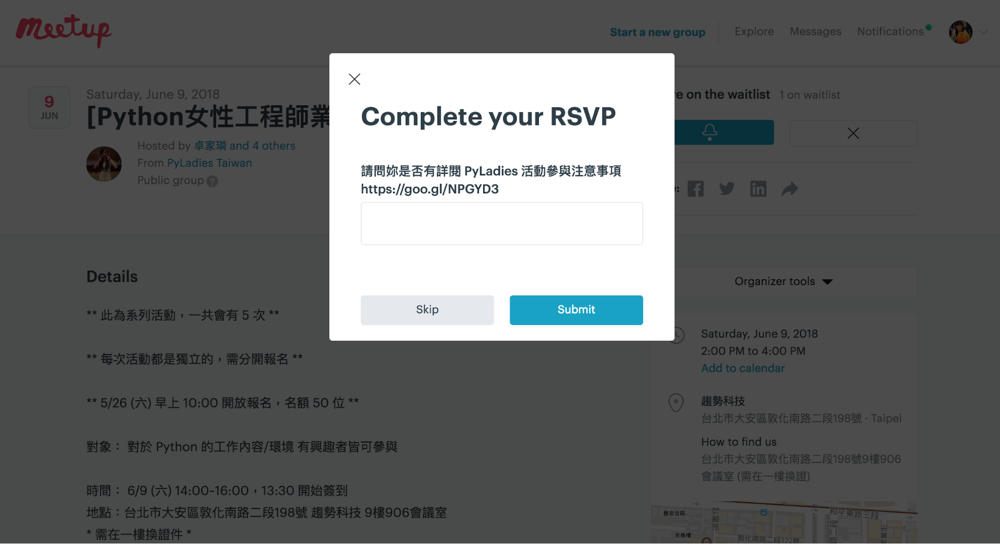

Meetup 使用說明與注意事項
Meetup 說明
Menu
Menu
Close
使用說明：
請先註冊Meetup帳號，並申請加入PyLadies Taiwan，等待審核 (審核通過之後才可以報名喔！所以請務必在報名當日前申請加入)
審核通過後，登入 Meetup 活動頁面，右手邊會有 “Are you going” 的字樣，「打勾」是要參加，「打叉」是不參加
按下「打勾」後，會跳出問題，請先閱讀此文件
https://goo.gl/NPGYD3
後，回答是，送出後就是有報名了！ (不代表有選到喔！) 
由於活動都有場地大小限制，因此只有顯示在 going 的人才是真的有報名到喔！ waiting list 或是 not going 都是沒有搶到名額的
going
waiting list
會是一個鈴鐺的圖示
not going
當有人取消時 (取消請將 RSVP 改為 NO)，Meetup 會自動依照報名的時間做候補，因此請記得注意是否有搶到名額/候補成功喔！
以下為活動注意事項
Meetup 上的活動都是獨立的，每一次活動都需要再報名一次，先搶先贏
Meetup 報名的活動皆為現場繳費
在 Meetup 上有分為 going (報名成功)、waiting (候補中)、not going (不參加)三種，只有 going 是有搶到名額的喔！ waiting 是不可以參與活動的
當有人取消報名時，meetup 會自動照 waiting list 的順序將人補上！ 保險起見，還請活動前一天晚上上來確認一下
不開放現場候補，只有 going 的人可以參與活動
若無法參與活動請儘早將 RSVP 改為 No，將機會讓給其他想參加的人
若超過三次無故不來 (沒有將 RSVP 改為 No、又沒有參與實際活動、純粹佔名額)，我們將會禁止你參與 PyLadies 之後的活動
請提早抵達活動現場進行報到，活動很紮實，我們會準時開始的